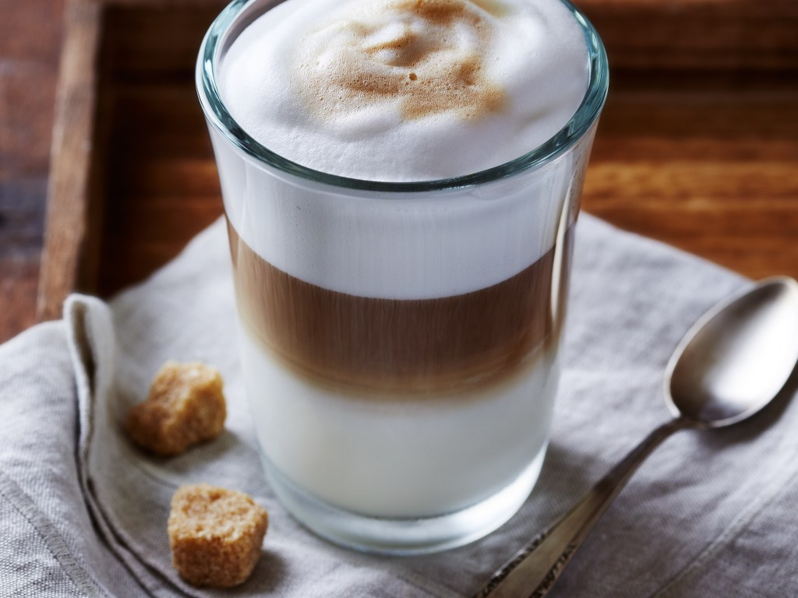

COFFEE | Tea | Shake | Back to Homepage |
||
| Latte | Macchiato | Americano |
|---|---|---|
 A latte is a coffee drink made with espresso and steamed milk. The term as used in English is a shortened form of the Italian caffè e latte, caffelatte or caffellatte, which means "milk coffee". |  Caffè macchiato, sometimes called espresso macchiato, is an espresso coffee drink with a small amount of milk, usually foamed. |  Caffè Americano is a type of coffee drink prepared by diluting an espresso with hot water, giving it a similar strength to, but different flavor from, traditionally brewed coffee. |